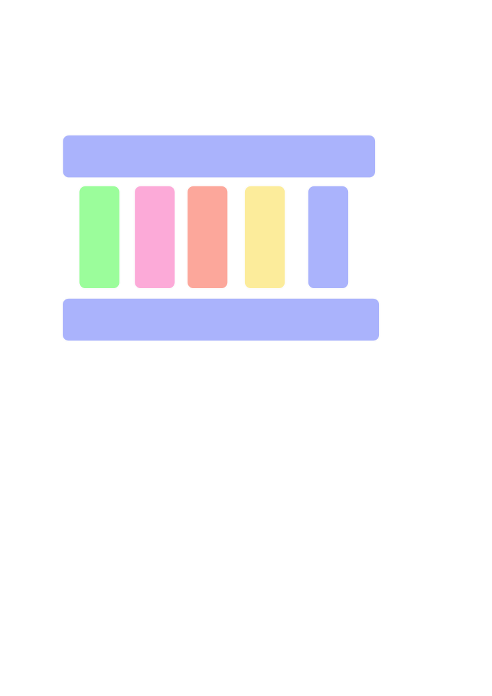
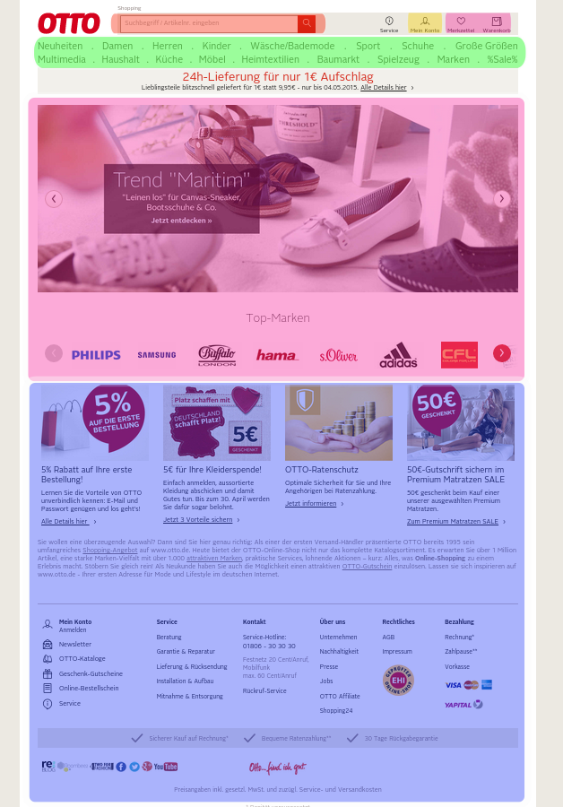
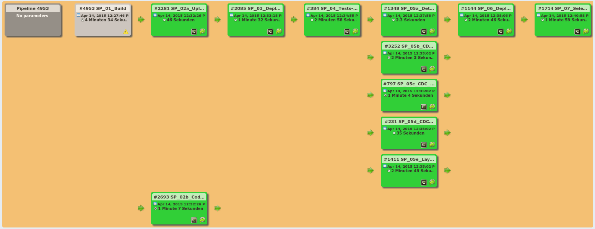

Moin!
Tom Vollerthun
Continuous Deployment
@OTTO
OTTO Mobile History
von hangeklebt bis responsive


Architektur




Was heißt Continous Deployment?
Jeder commit wird Live gestellt (oder zumindest fast jeder)



Stationen eines commits
- Entwicklerrechner (Unit-, Service- & Layouttests)
- Git repository
- Build-Server (Unit- & Servicetests)
- CI (Integrations- & Layouttests & CDCs)
- Staging (ggf. Abnahme & QA)
- Prelive (reality-check)
- Live
Warum keinen Featurebranch?
- Features und Bugfixes im Livebranch müssen heruntergemerged werden
- Refactorings etc. im Featurebranch helfen nicht beim Bugfixing in Live
- Risikomaximierung durch Big-Bang-Deployments
- Integration findet erst spät statt -> Testaufwand
Und was ist mit work-in-progress?
Feature-Toggles
Continuous Deployment is awesome